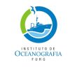
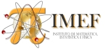
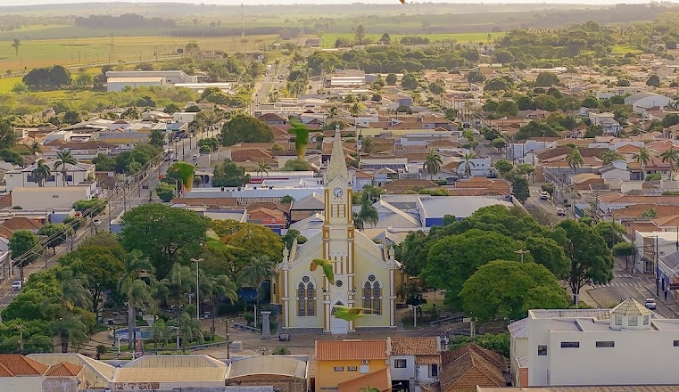

Memorial acadêmico para professor titular
O conhecimento sempre precede a ação.
Ousar é perder o equilíbrio momentaneamente.
Não ousar é perder-se.
Kierkegaard
Maurício Garcia de Camargo
Trajetória, contribuições e projeto acadêmico
23/05/2026



Nascimento no interior de São Paulo (Março/1968)
E se lembrou de quando era uma criança.
E de tudo o que vivera até ali. R.R.
Rancharia - SP

Antepassados
Me diz por que que o céu é azul. R.R.
- Avós eram imigrantes portuguesa e sírio-libanesa, que tinham pequenos comércios.
- Meus pais se casaram com 21/22 anos e tiveram três filhos. Sou o caçula.
- Pai bancário do Banco de Brasil e fez Matemática e Economia na UNESP.
- Mãe virou professora de matemática de escola.
- A família e a matemática.
- Pai decidiu fazer mestrado em Brasília na UnB.
Mudança para Brasília (Nov/1972)
Meu Deus, mas que cidade linda… R.R.
- Início difícil para a família em Brasília.
- Depois do mestrado, meu pai retornou ao BB, agora num cargo alto, e a vida melhorou.
- Minha infância foi livre, muito livre.
A vida em Brasília
Por toda a plataforma
Você não vê a torre, yeah!!! R.R.
- Com 7/8 anos todos tinham o mapa de brasília na cabeça.
- E podíamos passar debaixo da roleta dos ônibus…
- Ditadura!
Estrutura narrativa do memorial
Eixo temporal
A apresentação acompanha a trajetória por fases, sem fragmentar o memorial em uma simples sequência curricular.
Eixo interpretativo
Cada fase deve responder a três perguntas: o que foi aprendido, o que foi construído e que continuidade isso produziu.
- Formação e base científica
- Consolidação em pesquisa, ensino e extensão
- Maturidade acadêmica e contribuição institucional
- Projeto para os próximos anos
Formação inicial: Oceanologia
- Graduação em Oceanologia pela FURG.
- Formação de base em oceanografia, ecologia marinha e métodos quantitativos.
- Primeiro contato com problemas integrados envolvendo organismos, sedimentos, água e processos costeiros.
Mensagem da lâmina
A graduação não aparece apenas como etapa inicial, mas como origem de uma forma integrada de olhar o ambiente marinho.
Inserir aqui 2–3 marcos pessoais: iniciação científica, orientador(a), primeiro trabalho de campo, tema de monografia, primeiras publicações ou experiências laboratoriais.
Pós-graduação: especialização e ampliação conceitual
- Mestrado em Zoologia pela UFPR.
- Mestrado em Ecologia Marinha Aplicada e Fundamental pela Universidade Livre de Bruxelas.
- Doutorado em Zoologia pela UFPR.
Ênfase sugerida
Mostrar a passagem de uma formação geral em oceanologia para uma atuação mais definida em ecologia bentônica, biodiversidade marinha, análise quantitativa e integração entre campo, laboratório e estatística.
Primeira consolidação docente: CEM-UFPR
- Ingresso como docente no Centro de Estudos do Mar da UFPR.
- Consolidação de disciplinas, projetos, orientações e redes de colaboração.
- Desenvolvimento de uma identidade acadêmica combinando ecologia marinha, estatística e formação de estudantes.
Como apresentar
Usar esta fase para mostrar crescimento institucional: criação de disciplinas, participação em cursos, coordenação de projetos, captação de recursos e formação de alunos.
Transição e retorno institucional à FURG
- Retorno à FURG como professor do Instituto de Oceanografia.
- Integração entre Oceanografia, Ecologia e Estatística aplicada.
- Atuação em ensino de graduação, pós-graduação, pesquisa, extensão e gestão acadêmica.
Ideia central
A transição pode ser apresentada como continuidade e reorientação: retorno ao ambiente formador, agora com experiência acumulada para contribuir com cursos, laboratórios, programas e políticas institucionais.
Eixo 1 — Ensino
Graduação
Disciplinas de base e disciplinas integradoras, com ênfase em raciocínio ecológico, estatístico e metodológico.
Pós-graduação
Formação avançada, orientação, delineamento de pesquisa, análise de dados e redação científica.
Materiais e inovação
Uso de R, Quarto, software livre, práticas de laboratório, atividades de campo e recursos didáticos reprodutíveis.
Inserir números: disciplinas ministradas, alunos atendidos, orientações concluídas/em andamento, produtos didáticos, monitorias e inovações pedagógicas.
Eixo 2 — Pesquisa
- Ecologia de invertebrados bentônicos.
- Oceanografia biológica e biogeoquímica marinha.
- Estatística ecológica, modelos, delineamento amostral e análise multivariada.
- Integração entre processos físicos, químicos e biológicos em ambientes costeiros e oceânicos.
Sugestão visual
Substituir este bloco por uma figura conceitual com três componentes: organismos bentônicos, ambiente físico-químico e métodos quantitativos.
Eixo 3 — Orientação e formação de pessoas
- Orientações em diferentes níveis de formação.
- Formação em campo, laboratório, análise de dados e escrita científica.
- Desenvolvimento de autonomia intelectual e rigor metodológico.
Mensagem da lâmina
O memorial deve explicitar que a produção acadêmica não se resume aos artigos, mas inclui a formação de pessoas capazes de formular perguntas, coletar dados, analisar evidências e comunicar resultados.
Eixo 4 — Gestão, infraestrutura e contribuição institucional
- Participação em comissões, colegiados, programas e ações institucionais.
- Organização de espaços de ensino, laboratórios, equipamentos e rotinas acadêmicas.
- Defesa de infraestrutura compartilhada, software livre e práticas reprodutíveis.
Para fortalecer
Apresente exemplos concretos: sala de informática, laboratórios, projetos pedagógicos, normas de uso, comissões, relatórios, avaliações e ações de extensão.
Síntese da trajetória
Base
Formação oceanográfica e ecológica.
Integração
Campo, laboratório, estatística e interpretação ambiental.
Contribuição
Ensino, pesquisa, orientação e construção institucional.
Projeto acadêmico para os próximos anos
- Consolidar materiais didáticos reprodutíveis e baseados em software livre.
- Fortalecer a integração entre Oceanografia, Ecologia, Biogeoquímica e Estatística.
- Ampliar redes de pesquisa e formação em ambientes costeiros, oceânicos e antárticos.
- Investir em infraestrutura laboratorial, computacional e metodológica.
Frase de fechamento possível
Minha trajetória indica uma convergência entre formação de pessoas, análise rigorosa de dados ambientais e compromisso institucional com a universidade pública.
Como adaptar este modelo
- Ajuste os anos e fases no bloco
timeline()no início do arquivo.
- Troque os textos genéricos por marcos pessoais e dados objetivos.
- Acrescente fotografias, mapas, capas de artigos, gráficos de produção e imagens de campo.
- Use a barra superior para manter a banca orientada temporalmente durante toda a apresentação.
Para renderizar: salve como memorial_timeline_revealjs.qmd e rode quarto render memorial_timeline_revealjs.qmd.